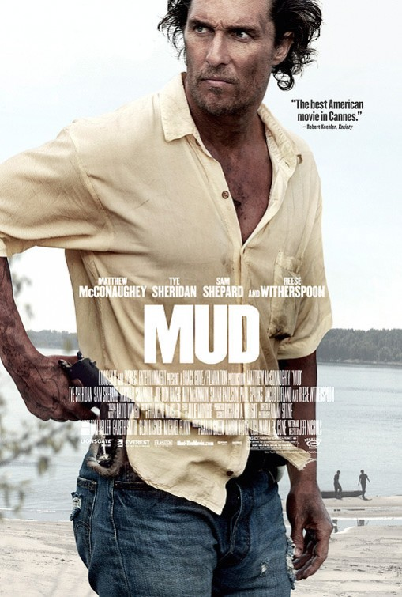

Friday, May the 10th, 2013
back to: title, date or indexes
When I saw advertisements for the imminent cinema release of Mud, I was bitterly disappointed to learn that this is a brand new film. I had hoped it was a revival of the original Mud, that classic film dun directed by wild-eyed auteur Horst Gack.

The wrong Mud
Gack, of course, invented film dun, and was its greatest practitioner. Unlike film noir, the archetypal film dun is shot entirely in shades of dun. It was Horst Gack's peculiar genius to recognise that there could be no better subject matter for a film in dun than mud. Thus, in Mud (1937), and its sequel, Further Mud (1957), the camera gazes unflinchingly at patches of mud, wholly dun in colour, without distracting the viewer with poltrooneries such as characters and plot and car chases and big loud fiery explosions.
“Mud is a gripping experience,” wrote the film critic Gervase Cravat in the October 1937 issue of Cravat's Film Digest magazine, “I, for one, will never look at mud in the same way, ever again.”
He returned to the subject in the following month's issue.
Last month I wrote that, having seen Horst Gack's Mud, I would never look at mud in the same way, ever again. It is with a certain humility, then, if not utter self-abasement, that I must admit I have indeed been looking at mud in the same old way as I always did. The very next day after watching Mud, I was taking a stroll in a sordid rustic backwater when I came upon an extensive stretch of mud, dun in hue, and the thought popped into my head “Gosh, what a lot of mud, just like all the other mud I have ever seen in my three score years on earth”, and I pranced on, towards the viaduct and the otter sanctuary, dismissing the mud from my mind. Only when I got home several hours later, and was making a cup of tea, preparatory to putting my feet up and whistling some dance band tunes, did I realise that I had looked at the mud in the old way, as if had never seen Horst Gack's film. This was highly disconcerting, so much so that I tightened the cravat around my neck, forgot about the cup of tea, and immediately wrote a mea culpa to Gack, confessing that his film had not, after all, had the effect on me I thought it had had, but this was almost certainly my fault rather than his. Knowing that unquestioning worship is the only proper approach to the great auteur, I added that I would atone for my philistinism by returning to the extensive stretch of mud, dun in hue, in the sordid rustic backwater, and mould from it a dun-hued mud effigy of Horst Gack himself, double life-size, before which I would prostrate myself several times a day, in between watching repeat screenings of Mud. This I have done, every day since, and boy oh boy, let me tell you, filmgoers, I am like unto a man transformed.
Hooting Yard on the Air, May the 16th, 2013 : “To Cut A Long Story Short” (starts around 19:31)